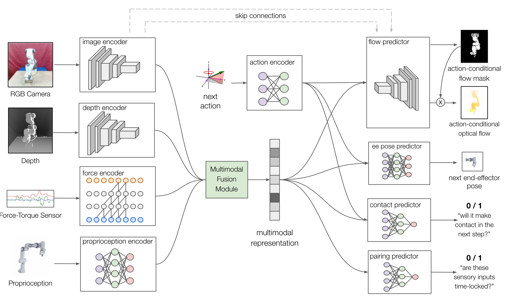

Making sense of vision and touch: learning multimodal representations for contact-rich tasks
Michelle A. Lee et al., ICRA 2019
- Progress , ieeexplore, arxiv, site, Github
贡献：
- Primary contributions:
A variational model for multimodal representation learning from which a contact-rich manipulation policy can be learned.Demonstration of peg insertion tasks that effectively utilize both haptic and visual feedback for hole search, peg alignment, and insertion. Ablation studies comparing the effects of each modality on task performance.Evaluation of generalization to tasks with different peg geometry and of robustness to perturbation and sensor noise.
- propose a new variational representation learning technique and significantly expand the experimental evaluation of the overall methodology in the following ways:
Analysis of our multimodal representation model compared to baseline models with different learning objectives, architecture, and dimension of the representation.Addition of depth as input modality, and addition of end effector roll to action space which makes the peg insertion task more challenging and increases the dimensionality of the action space from 3-DoF to 4-DoF.Reproduction of results on a new robot, the Franka Panda
术语
- MLP: multilayer perceptron
- ELBO: Evidence Lower BOund
方法

-
Finite-horizon MDP
: Item Define state latent representation :
low-dimensional latent space representation learned from high-dimensional 2D and 3D visual data and from haptic data
neural network parameterized byand action space defined over continuously-valued, 3D position displacements and roll angle displacement in the end-effector space state transition dynamics initial state distribution reward function horizon discount factor optimal stochastic policy objective maximize -
MDP元素
state action：一系列机械臂末端的连续值，包含3D位置变化量 和转动角度 （任务始终是垂直放入插销，因此不考虑另外两个转动自由度），不需要学习joint-space command，关节角度的求解由Trajectory Generator完成 Trajectory Generator同时完成从低频率（20Hz）的policy输出到高频率（500Hz）的扭矩控制的转换 state transitio dynamics reward horizon discount factor - 最终得到policy
-
两种对比用baseline representation models:
- Deterministic model
- Reconstruction model